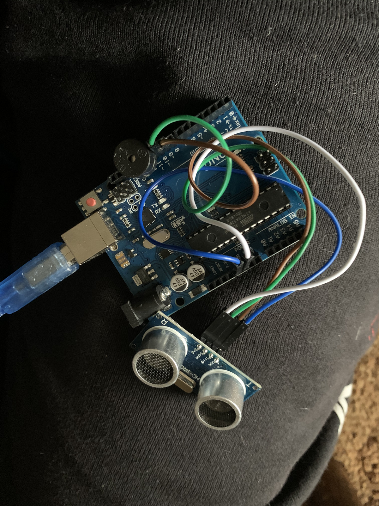
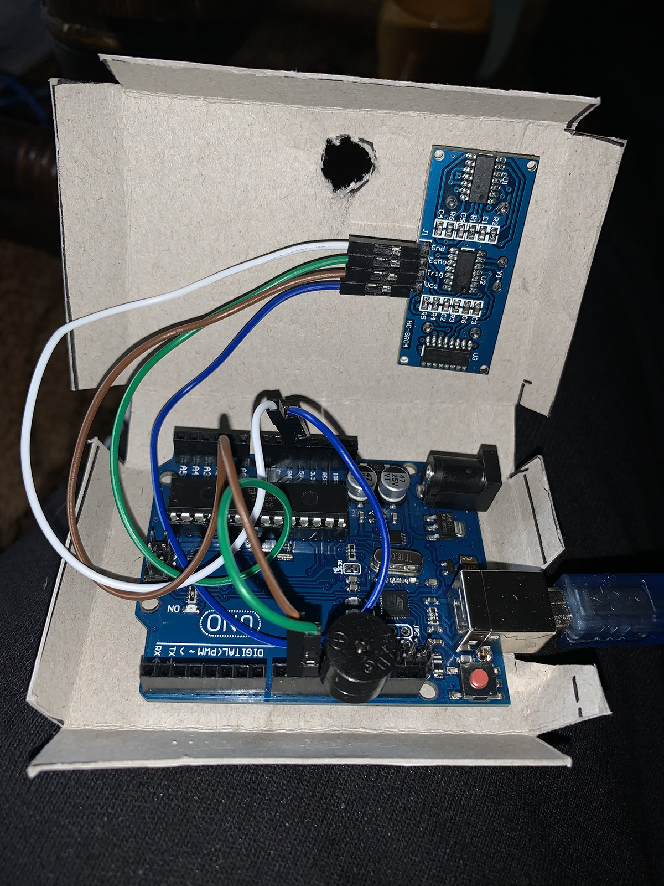
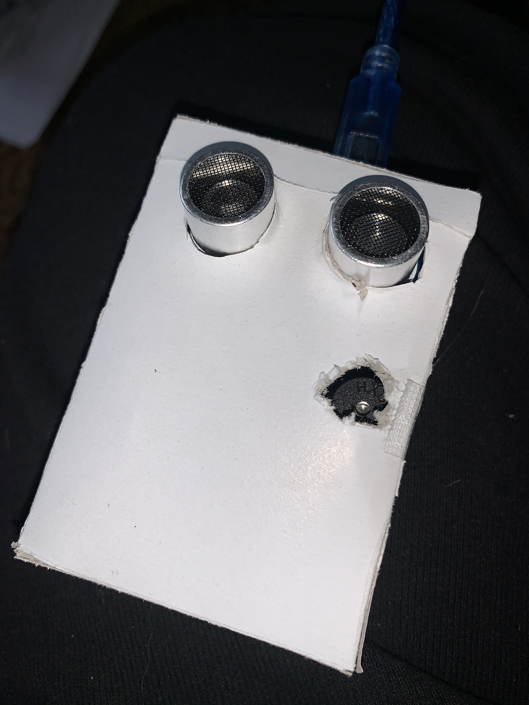
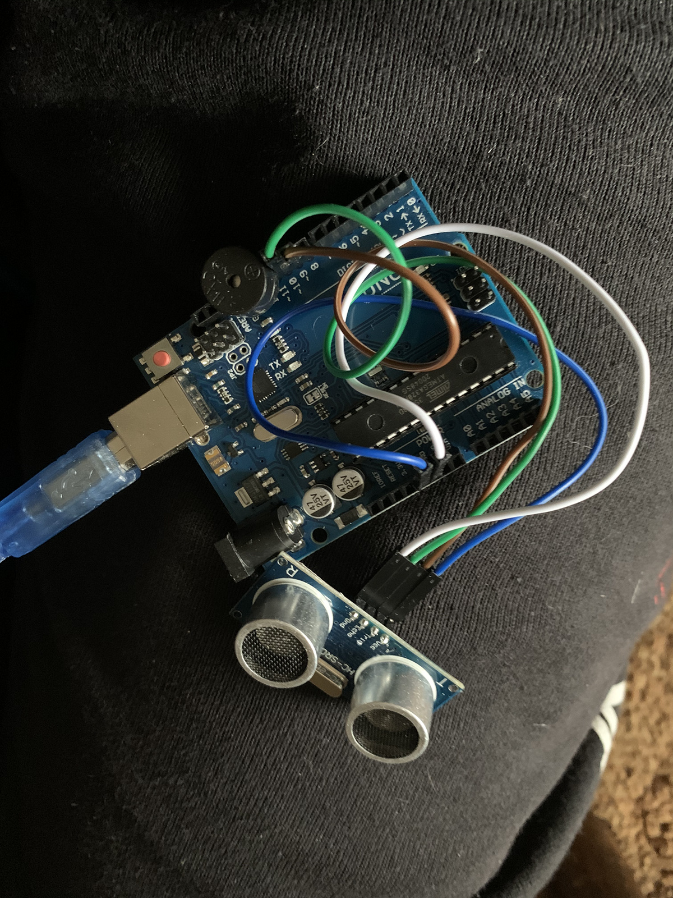
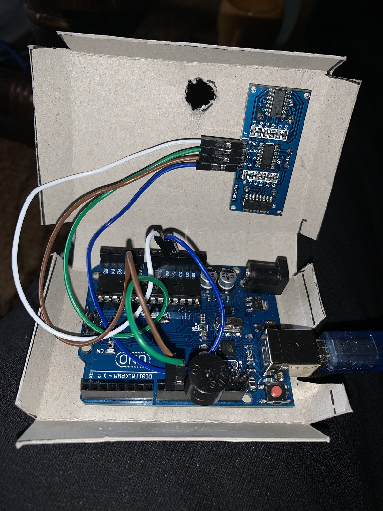
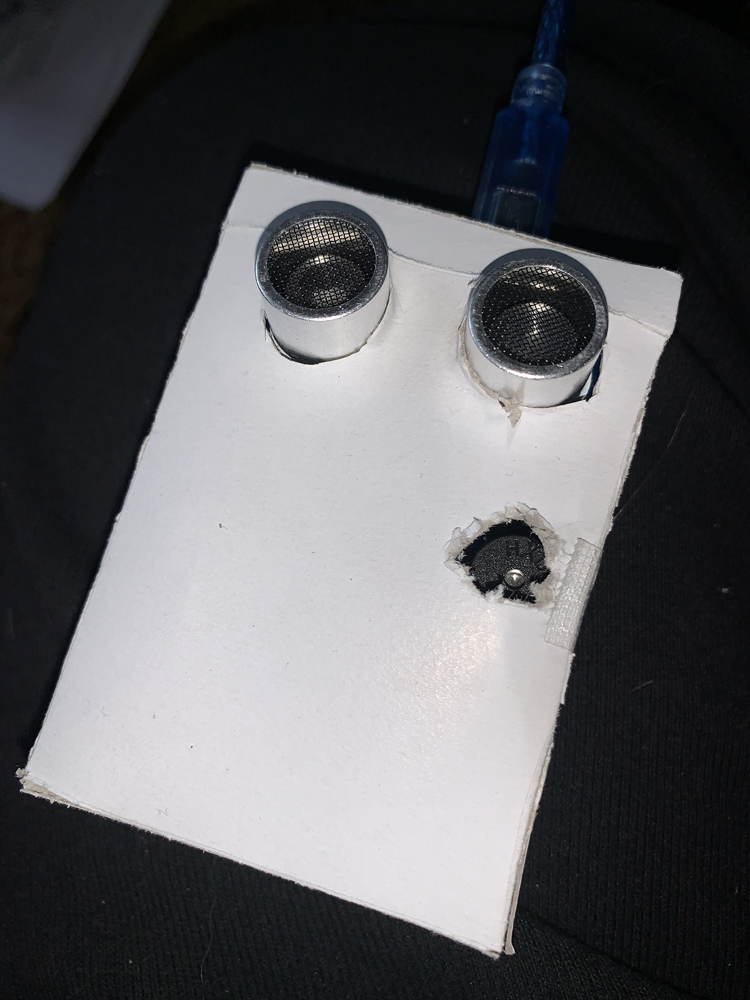

The seeing Eye: Dog project
Over dit Project:
Veel honden die problemen hebben met hun zicht gebruiken een zeer verouderd systeem (de Halo) om te voorkomen dat ze tegen voorwerpen of muren aan lopen. Omdat deze honden veel last krijgen van hun spieren is er met arduino een nieuw systeem ontworpen. Ook wel The Seeing Eye: Dog
Ik ben op dit concept gekomen door een voorbeeld van SA "Distance Measurement Using Arduino Ultrasonic Sensor" dit concept heb ik gevonden op de Arduino projecten portal. Ik had in meerder recensies gelezen dat er in deze code veel fouten zaten en ik wilde de fouten er uit halen en het circuit uitbreiden met ene andere sensor. Wat ik mooi vindt aan dit project is dat het de afstand nauwkeurig leest en omzet naar een sensor actie. De sensor geeft zo nauwkeurig info dat je zelfs op korte afstand iets zou kunnen weergeven dit is dan ook de insteek die ik wilde uitgaan werken in het eind ontwerp.
Ik heb naar aanleiding van exercies 9 en 11 een systeem ontworpen voor blinde en slechtziende honden. Dit systeem voorkomt dat deze honden tegen een voorwerp aan kunnen lopen. Mijn hond raakte snel gewend aan het systeem. Dit ondanks hij uitstekend kan zien : ). Na drie keer met het systeem gelopen te hebben vermeed hij al snel muren en voorwerpen dichterbij dan 45 cm. Deze Wearble kan bevestigd worden aan verschillende soorten tuigen en zwaait niet of weinig heen en weer waardoor de meting stabiel blijft. Wanneer dit systeem gebruikt gaat worden zal er enige tijd in het aanleren van het systeem gestoken moeten worden. Voor andere honden zal het leren wat langzamer verlopen maar binnen een paar dagen zullen ze begrijpen wat de piep inhoud en waarvoor het waarschuwt.
- color: black
- Available: in stock
- Catogory: shoes
- Shipping area: All over the world
- Shipping fee: Free